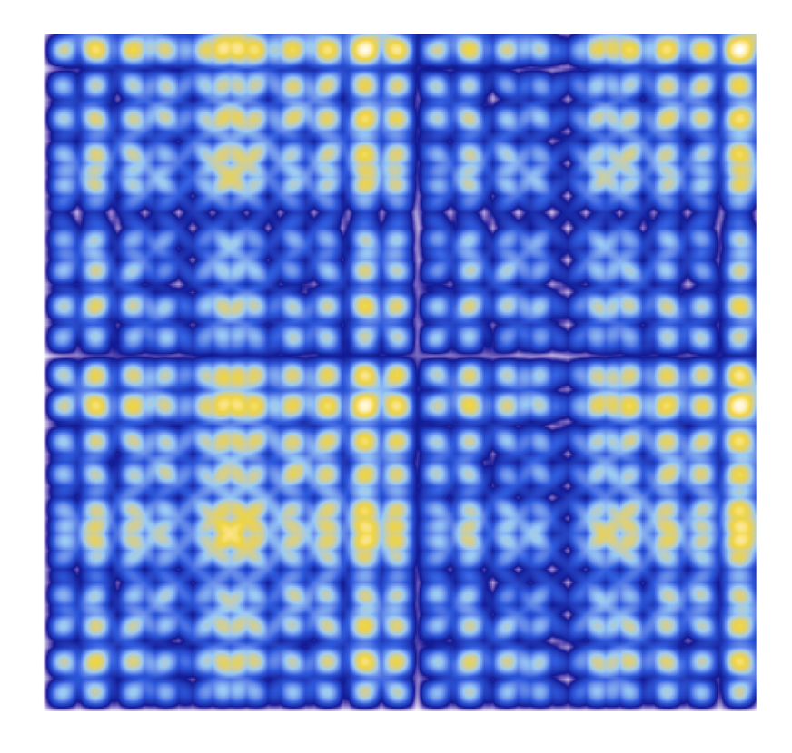
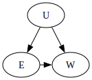
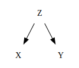
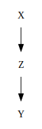
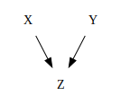
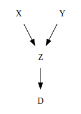

import numpy as np
import pandas as pd
import matplotlib.pyplot as plt
import seaborn as sns
import statsmodels.api as sm
import arviz as az
import bambi as bmb
import networkx as nx
import graphviz
from graphviz import Digraph
import warnings
warnings.filterwarnings("ignore")56 Inferenza causale

Prerequisiti
Concetti e competenze chiave
Preparazione del Notebook
seed: int = sum(map(ord, "regr_causal_inference"))
rng: np.random.Generator = np.random.default_rng(seed=seed)
sns.set_theme(palette="colorblind")
az.style.use("arviz-darkgrid")
%config InlineBackend.figure_format = "retina"Introduzione
Lo scopo di questo capitolo è di introdurre il modello di regressione multipla e di discutere come esso si collega all’analisi causale.
Il modello di regressione offre indubitabili vantaggi: i coefficienti parziali di regressione consentono di isolare l’effetto di una variabile, al netto dell’influenza delle altre variabili nel modello. Questo approccio permette di ottenere quello che viene chiamato “controllo statistico”. Nel capitolo precedente, abbiamo introdotto il concetto di errore di specificazione: se escludiamo dal modello di regressione una variabile che ha un effetto causale su \(Y\) ed è correlata con gli altri predittori, le stime degli effetti causali fornite dal modello di regressione saranno sistematicamente distorte. Questo potrebbe suggerire che sia meglio aggiungere al modello quanti più predittori possibile, per massimizzare il controllo statistico e minimizzare la possibilità di un errore di specificazione.
Tuttavia, questo approccio, che McElreath (2020) chiama “insalata causale”, produce più effetti negativi di quanti problemi risolva. In questo capitolo, esploreremo come la selezione delle variabili indipendenti da inserire nel modello di regressione richieda una conoscenza approfondita della struttura causale del fenomeno che si desidera descrivere. Senza una tale conoscenza, l’uso del modello di regressione può risultare più dannoso che utile.
56.1 Confondimento
Iniziamo con una definizione del fenomeno del confondimento. Il confondimento si verifica quando l’associazione tra un risultato \(Y\) e un predittore di interesse \(X\) differisce da quella che si osserverebbe se i valori di \(X\) fossero determinati sperimentalmente.
Ad esempio, consideriamo l’associazione tra istruzione (\(E\)) e salario (\(W\)). Esistono variabili non osservate (\(U\)) che influenzano entrambe, come il luogo di residenza e lo status socioeconomico. Nel seguente grafo causale, ci sono due percorsi tra \(E\) e \(W\):
f = graphviz.Digraph()
with f.subgraph() as s:
s.attr(rank='same')
s.node("E")
s.node("W")
f.node("U")
f.edge("U", "E")
f.edge("U", "W")
f.edge("E", "W")
f
- Percorso causale diretto: \(E \rightarrow W\)
- Percorso non causale indiretto: \(E \leftarrow U \rightarrow W\)
Solo il primo percorso (\(E \rightarrow W\)) rappresenta un effetto causale. Il secondo percorso (\(E \leftarrow U \rightarrow W\)) crea un’associazione statistica ma non causale.
Per isolare il percorso causale, la soluzione ideale è condurre un esperimento randomizzato, assegnando i livelli di istruzione \(E\) casualmente, eliminando così l’influenza di \(U\) su \(E\). L’assegnazione casuale dell’istruzione blocca il percorso \(E \leftarrow U \rightarrow W\), lasciando solo il percorso causale \(E \rightarrow W\).
Tuttavia, questo esperimento non può essere eseguito. In assenza di esperimenti, è necessaria una soluzione statistica che blocchi il percorso non causale. In assenza di esperimenti, si può condizionare su \(U\) aggiungendolo al modello statistico. Questo blocca il flusso di informazioni attraverso \(U\), isolando l’effetto causale tra \(E\) e \(W\).
Ad esempio, se \(U\) è la ricchezza media di una regione, conoscere \(U\) (la regione) elimina l’influenza indiretta su \(W\) attraverso \(E\). Dopo aver appreso \(U\), sapere \(E\) non aggiunge ulteriori informazioni su \(W\).
In sintesi, il confondimento può distorcere l’associazione tra due variabili a causa di percorsi indiretti attraverso variabili non osservate. La randomizzazione o il condizionamento su queste variabili può isolare il percorso causale, permettendo di misurare accuratamente l’effetto di una variabile sull’altra.
Questa discussione ha un’implicazione importante per il modello di regressione. Nel caso dell’esempio, solo se introduciamo nel modello di regressione la covariata \(U\), ovvero se condizioniamo su \(U\), possiamo stimare in maniera non distorta la relazione causale tra \(E\) e \(W\). Tuttavia, ci sono anche casi in cui introdurre la covariata sbagliata può introdurre distorsioni nei risultati dell’analisi di regressione. Senza una comprensione delle relazioni causali che legano le variabili, non è possibile determinare quali siano le variabili da inserire o da escludere dal modello di regressione.
56.2 Confondimento
Iniziamo con una definizione del fenomeno del confondimento. Il confondimento si verifica quando l’associazione tra un risultato \(Y\) e un predittore di interesse \(X\) differisce da quella che si osserverebbe se i valori di \(X\) fossero determinati sperimentalmente.
Ad esempio, consideriamo l’associazione tra istruzione (\(E\)) e salario (\(W\)). Esistono variabili non osservate (\(U\)) che influenzano entrambe, come il luogo di residenza e lo status socioeconomico. Nel seguente grafo causale, ci sono due percorsi tra \(E\) e \(W\):
import graphviz
f = graphviz.Digraph()
with f.subgraph() as s:
s.attr(rank='same')
s.node("E")
s.node("W")
f.node("U")
f.edge("U", "E")
f.edge("U", "W")
f.edge("E", "W")
f- Percorso causale diretto: \(E \rightarrow W\)
- Percorso non causale indiretto: \(E \leftarrow U \rightarrow W\)
Solo il primo percorso (\(E \rightarrow W\)) rappresenta un effetto causale. Il secondo percorso (\(E \leftarrow U \rightarrow W\)) crea un’associazione statistica ma non causale.
Per isolare il percorso causale, la soluzione ideale è condurre un esperimento randomizzato, assegnando i livelli di istruzione \(E\) casualmente, eliminando così l’influenza di \(U\) su \(E\). L’assegnazione casuale dell’istruzione blocca il percorso \(E \leftarrow U \rightarrow W\), lasciando solo il percorso causale \(E \rightarrow W\).
Tuttavia, questo esperimento non può essere eseguito. In assenza di esperimenti, è necessaria una soluzione statistica che blocchi il percorso non causale. Si può condizionare su \(U\) aggiungendolo al modello statistico. Questo blocca il flusso di informazioni attraverso \(U\), isolando l’effetto causale tra \(E\) e \(W\).
Ad esempio, se \(U\) è la ricchezza media di una regione, conoscere \(U\) (la regione) elimina l’influenza indiretta su \(W\) attraverso \(E\). Dopo aver appreso \(U\), sapere \(E\) non aggiunge ulteriori informazioni su \(W\).
In sintesi, il confondimento può distorcere l’associazione tra due variabili a causa di percorsi indiretti attraverso variabili non osservate. La randomizzazione o il condizionamento su queste variabili può isolare il percorso causale, permettendo di misurare accuratamente l’effetto di una variabile sull’altra.
Questa discussione ha un’implicazione importante per il modello di regressione. Nel caso dell’esempio, solo se introduciamo nel modello di regressione la covariata \(U\), ovvero se condizioniamo su \(U\), possiamo stimare in maniera non distorta la relazione causale tra \(E\) e \(W\). Tuttavia, ci sono anche casi in cui introdurre la covariata sbagliata può introdurre distorsioni nei risultati dell’analisi di regressione. Senza una comprensione delle relazioni causali che legano le variabili, non è possibile determinare quali siano le variabili da inserire o da escludere dal modello di regressione.
56.3 Bloccare i percorsi backdoor
Bloccare i percorsi di confondimento tra un predittore \(X\) e un risultato \(Y\) è noto come “chiudere un percorso backdoor”. Non vogliamo che nessuna associazione spuria entri attraverso un percorso non causale che coinvolge il predittore \(X\). Nell’esempio sopra, il percorso \(E \leftarrow U \rightarrow W\) è un percorso di backdoor, poiché entra in \(E\) con una freccia e collega \(E\) a \(W\). Questo percorso non è causale: intervenire su \(E\) non provocherà un cambiamento in \(W\) attraverso questo percorso, ma produrrà comunque un’associazione tra \(E\) e \(W\).
La buona notizia è che, dato un grafo aciclico diretto (DAG) causale, è sempre possibile determinare quali variabili controllare per chiudere tutti i percorsi di backdoor. È anche possibile identificare quali variabili non controllare per evitare di creare nuovi confondimenti. Esistono quattro tipi fondamentali di relazioni causali che combinano tutti i possibili percorsi: la biforcazione, la catena, il collider e il discendente. Pertanto, è necessario comprendere solo questi quattro concetti e come fluisce l’informazione in ciascuno di essi.
- Confondente: Una variabile \(U\) che causa sia il predittore \(X\) sia il risultato \(Y\). Aggiustare per un confondente (fork) è necessario per ottenere stime non distorte.
- Esempio: \(X \leftarrow U \rightarrow Y\).
- Catena: Una sequenza di variabili in cui una causa l’altra, formando un percorso diretto. Non si dovrebbe aggiustare per le variabili lungo questo percorso, poiché rappresenta il percorso causale.
- Esempio: \(X \rightarrow Z \rightarrow Y\).
- Collider: Una variabile che è causata da due altre variabili. Aggiustare per un collider può introdurre confondimento, poiché si crea un’associazione spuria tra i due predittori.
- Esempio: \(X \rightarrow Z \leftarrow Y\).
- Discendente: Una variabile che è causata sia dal predittore \(X\) sia dal risultato \(Y\). Condizionare su un discendente può introdurre un bias, distorcendo l’associazione tra \(X\) e \(Y\).
- Esempio: \(X \rightarrow W \leftarrow Y\) con \(W\) che ha un effetto su \(Z\) (discendente).
Comprendere queste relazioni e sapere come intervenire su di esse è fondamentale per costruire modelli di regressione che riflettano accuratamente le relazioni causali tra le variabili. Questo approccio permette di isolare gli effetti causali e di evitare le distorsioni introdotte da percorsi di backdoor.
56.4 Tipi di relazioni elementari nei DAG
Ogni DAG, per quanto grande e complicato, è costruito sulle quattro relazioni elementari descritte in precedenza. Esaminiamole in dettaglio.
56.4.1 Confondimento
La configurazione detta “fork” rappresenta un classico caso di confondimento. Nel confondimento, una variabile \(Z\) è una causa comune di due variabili \(X\) e \(Y\), generando una correlazione tra loro: \(X \leftarrow Z \rightarrow Y\). Se condiamo su \(Z\), allora \(X\) e \(Y\) diventano indipendenti.
fork = Digraph(comment='Forchetta')
fork.node('X', 'X', shape='plaintext')
fork.node('Y', 'Y', shape='plaintext')
fork.node('Z', 'Z', shape='plaintext')
fork.edge('Z', 'X')
fork.edge('Z', 'Y')
fork
56.4.1.1 Esempio
Consideriamo l’effetto dell’istruzione (\(X\)) sul salario (\(Y\)) con \(Z\) che rappresenta lo status socioeconomico.
56.4.1.2 Conseguenze del Controllo
- Controllare \(Z\): Blocca il percorso non causale, isolando l’effetto diretto di \(X\) su \(Y\).
- Non controllare \(Z\): Introduce confondimento, portando a una stima distorta dell’effetto di \(X\) su \(Y\).
n = 1000
Z = np.random.normal(0, 1, n)
X = 0.5 * Z + np.random.normal(0, 1, n)
Y = 0.8 * Z + np.random.normal(0, 1, n)
df = pd.DataFrame({'X': X, 'Y': Y, 'Z': Z})
# Modello senza controllo per Z
mod1 = bmb.Model('Y ~ X', df)
results1 = mod1.fit()az.summary(results1, round_to=2)| mean | sd | hdi_3% | hdi_97% | mcse_mean | mcse_sd | ess_bulk | ess_tail | r_hat | |
|---|---|---|---|---|---|---|---|---|---|
| Intercept | -0.02 | 0.04 | -0.09 | 0.05 | 0.0 | 0.0 | 6310.32 | 3060.06 | 1.0 |
| X | 0.30 | 0.03 | 0.23 | 0.36 | 0.0 | 0.0 | 5784.06 | 2927.95 | 1.0 |
| sigma | 1.23 | 0.03 | 1.18 | 1.28 | 0.0 | 0.0 | 6424.03 | 3165.63 | 1.0 |
# Modello con controllo per Z
mod2 = bmb.Model('Y ~ X + Z', df)
results2 = mod2.fit()az.summary(results2, round_to=2)| mean | sd | hdi_3% | hdi_97% | mcse_mean | mcse_sd | ess_bulk | ess_tail | r_hat | |
|---|---|---|---|---|---|---|---|---|---|
| Intercept | -0.03 | 0.03 | -0.08 | 0.03 | 0.0 | 0.0 | 5749.64 | 3042.71 | 1.0 |
| X | -0.04 | 0.03 | -0.10 | 0.02 | 0.0 | 0.0 | 3711.94 | 3112.96 | 1.0 |
| Z | 0.84 | 0.04 | 0.77 | 0.90 | 0.0 | 0.0 | 3850.83 | 3388.92 | 1.0 |
| sigma | 0.99 | 0.02 | 0.95 | 1.03 | 0.0 | 0.0 | 5593.71 | 2941.94 | 1.0 |
56.4.2 Catena
In una catena, una variabile \(X\), influenza un mediatore \(Z\), che a sua volta influenza l’esito \(Y\): \(X \rightarrow Z \rightarrow Y\). Condizionare su \(Z\) blocca il percorso da \(X\) a \(Y\).
pipe = Digraph(comment='Tubo')
pipe.node('X', 'X', shape='plaintext')
pipe.node('Y', 'Y', shape='plaintext')
pipe.node('Z', 'Z', shape='plaintext')
pipe.edge('X', 'Z')
pipe.edge('Z', 'Y')
pipe
56.4.2.1 Esempio
Consideriamo l’effetto dell’apprendimento (\(X\)) sulla comprensione (\(Y\)) mediato dalla conoscenza (\(Z\)).
56.4.2.2 Conseguenze del Controllo
- Controllare \(Z\): Blocca il percorso causale, fornendo solo l’effetto diretto di \(X\) su \(Y\).
- Non controllare \(Z\): Misura l’effetto totale di \(X\) su \(Y\).
X = np.random.normal(0, 1, n)
Z = 5 * X + np.random.normal(0, 1, n)
Y = 3 * Z + np.random.normal(0, 1, n)
df = pd.DataFrame({'X': X, 'Z': Z, 'Y': Y})
# Modello senza controllo per Z
mod1 = bmb.Model('Y ~ X', df)
results1 = mod1.fit()az.summary(results1, round_to=2)| mean | sd | hdi_3% | hdi_97% | mcse_mean | mcse_sd | ess_bulk | ess_tail | r_hat | |
|---|---|---|---|---|---|---|---|---|---|
| Intercept | 0.04 | 0.10 | -0.15 | 0.23 | 0.0 | 0.0 | 6356.32 | 2949.31 | 1.0 |
| X | 14.95 | 0.10 | 14.77 | 15.13 | 0.0 | 0.0 | 6321.33 | 3376.27 | 1.0 |
| sigma | 3.20 | 0.07 | 3.06 | 3.33 | 0.0 | 0.0 | 6103.86 | 2993.17 | 1.0 |
# Modello con controllo per Z
mod2 = bmb.Model('Y ~ X + Z', df)
results2 = mod2.fit()az.summary(results2, round_to=2)| mean | sd | hdi_3% | hdi_97% | mcse_mean | mcse_sd | ess_bulk | ess_tail | r_hat | |
|---|---|---|---|---|---|---|---|---|---|
| Intercept | 0.04 | 0.03 | -0.03 | 0.10 | 0.0 | 0.0 | 3132.72 | 2315.01 | 1.0 |
| X | 0.23 | 0.16 | -0.09 | 0.52 | 0.0 | 0.0 | 1234.56 | 1621.51 | 1.0 |
| Z | 2.95 | 0.03 | 2.89 | 3.01 | 0.0 | 0.0 | 1231.93 | 1656.26 | 1.0 |
| sigma | 1.03 | 0.02 | 0.99 | 1.07 | 0.0 | 0.0 | 2903.70 | 2513.20 | 1.0 |
56.4.3 Collider
In un collider, due variabili \(X\) e \(Y\) influenzano una terza variabile \(Z\): \(X \rightarrow Z \leftarrow Y\). Condizionare su \(Z\) può indurre una correlazione spuria tra \(X\) e \(Y\).
collider = Digraph(comment='Collider')
collider.node('X', 'X', shape='plaintext')
collider.node('Y', 'Y', shape='plaintext')
collider.node('Z', 'Z', shape='plaintext')
collider.edge('X', 'Z')
collider.edge('Y', 'Z')
collider
Il bias di selezione si verifica quando il campione che analizziamo non è rappresentativo della popolazione a causa del processo di selezione. Questo può portare a correlazioni spurie perché il processo di selezione può favorire involontariamente alcune caratteristiche.
Il bias del collider (o bias di stratificazione del collider) si verifica quando due variabili, \(X\) e \(Y\), influenzano una terza variabile \(Z\) (il collider). Se ci condiamo su \(Z\), possiamo indurre un’associazione spuria tra \(X\) e \(Y\), anche se queste variabili sono scorrelate nella popolazione.
Nell’esempio tratto da McElreath (2020)`, si suggerisce che sembra che gli studi scientifici più degni di nota siano i meno affidabili. Più è probabile che uno studio sia interessante, se vero, meno è probabile che sia vero. Più noioso è il tema, più rigorosi sono i risultati. Come può esistere questa correlazione negativa, ampiamente creduta da molti?
In realtà, tutto ciò che è necessario affinché emerga una tale correlazione negativa è che ci si preoccupin sia della rilevanza che dell’affidabilità. Che si tratti di revisione di sovvenzioni o di riviste, se editori e revisori si preoccupano di entrambi gli aspetti, allora l’atto stesso della selezione è sufficiente a rendere gli studi più rilevanti i meno affidabili. Infatti, è difficile immaginare come il processo di peer review possa evitare di creare questa correlazione negativa.
Ecco una semplice simulazione per illustrare il concetto. Supponiamo che un pannello di revisione delle sovvenzioni riceva 200 proposte di ricerca. Tra queste proposte, non vi è alcuna correlazione tra affidabilità (rigore, erudizione, plausibilità del successo) e rilevanza (valore per il benessere sociale, interesse pubblico). Il pannello pesa in ugual misura l’affidabilità e la rilevanza. Successivamente, classificano le proposte in base ai loro punteggi combinati e selezionano il 10% migliore per il finanziamento.
# Numero di proposte da finanziare
N = 200
# Proporzione da selezionare
p = 0.1
# Rilevanza non correlata
nw = np.random.randn(N)
# Affidabilità non correlata
tw = np.random.randn(N)
correlation = np.corrcoef(tw, nw)[0, 1]
print(correlation)0.026051430796600182Nello script, il processo di selezione basato sul punteggio combinato s induce una correlazione spuria tra nw e tw. Sebbene nw e tw siano non correlati nell’intero dataset, essi appaiono correlati nel sottoinsieme selezionato.
# Punteggio totale
s = nw + tw
# Soglia per il 10% migliore
q = np.quantile(s, 1 - p)
# Selezionati
selected = s >= q
# Correlazione tra affidabilità e rilevanza nei selezionati
correlation = np.corrcoef(tw[selected], nw[selected])[0, 1]
print(correlation)-0.7082917138754293Si noti che:
- Il punteggio combinato
sagisce come un collider perché è influenzato sia danwche datw. - Quando selezioniamo le proposte basandoci su
s(condizioniamo sus), introduciamo involontariamente una correlazione tranwetwnel sottoinsieme selezionato.
In altre parole, condizionando su una variabile (s) che è influenzata sia da nw che da tw, induciamo una correlazione spuria tra queste due variabili non correlate. Questo è un esempio specifico di bias del collider, dove il processo di selezione agisce come il collider.
Per riassumere:
- Bias di selezione: in questo esempio si verifica perché analizziamo solo il 10% delle proposte migliori.
- Bias del collider: è introdotto perché la variabile di selezione
s(punteggio totale) è influenzata sia danwche datw, portando a una correlazione spuria quando condiamo sus.
Quindi, la correlazione spuria osservata nel sottoinsieme selezionato è il risultato del bias del collider introdotto dal processo di selezione basato sul punteggio combinato.
Perché la correlazione è negativa nel sottoinsieme di dati selezionato? Perché, ad esempio, se una proposta selezionata ha una bassa affidabilità (tw), deve avere un’alta rilevanza (nw). Altrimenti, non sarebbe stata finanziata. Lo stesso vale al contrario: se una proposta ha una bassa rilevanza (nw), possiamo dedurre che deve avere un’affidabilità superiore alla media. Altrimenti, non sarebbe stata selezionata per il finanziamento. Questo è il concetto chiave da comprendere: quando condiamo su un collider, si creano associazioni statistiche, ma non necessariamente causali, tra le sue cause.
56.4.4 Discendente
Un discendente è una variabile influenzata da un’altra variabile. Condizionare su un discendente significa parzialmente condizionare sul suo genitore. Nel DAG seguente, condizionare su \(D\) condizionerà anche, in una certa misura, su \(Z\).
descendant = Digraph(comment='Discendente')
descendant.node('X', 'X', shape='plaintext')
descendant.node('Y', 'Y', shape='plaintext')
descendant.node('Z', 'Z', shape='plaintext')
descendant.node('D', 'D', shape='plaintext')
descendant.edge('X', 'Z')
descendant.edge('Y', 'Z')
descendant.edge('Z', 'D')
descendant
Questo perché \(D\) contiene informazioni su \(Z\), che a sua volta è un collider tra \(X\) e \(Y\). Condizionare su \(D\) può aprire parzialmente il percorso da \(X\) a \(Y\) attraverso \(Z\), creando un’associazione spuria tra \(X\) e \(Y\). Tuttavia, l’effetto di condizionare su un discendente dipende dalla relazione tra il discendente e il suo genitore. I discendenti sono comuni nei modelli causali perché spesso non possiamo misurare una variabile direttamente e dobbiamo utilizzare un proxy per essa.
56.4.4.1 Esempio
Consideriamo l’effetto dell’intelligenza (\(X\)) sul punteggio del test (\(Y\)) tramite il tempo di apprendimento (\(Z\)) e il punteggio in una simulazione (\(D\)).
56.4.4.2 Conseguenze del Controllo
- Controllare \(D\): Può introdurre bias, creando un percorso non causale da \(X\) a \(Y\) attraverso \(Z\).
- Non controllare \(D\): Mantiene il percorso causale corretto da \(X\) a \(Y\).
I = np.random.normal(100, 15, n)
T = 200 - I + np.random.normal(0, 1, n)
S = 0.5 * I + 0.1 * T + np.random.normal(0, 1, n)
D = 0.7 * S + np.random.normal(0, 1, n)
df = pd.DataFrame({'I': I, 'T': T, 'S': S, 'D': D})
# Modello senza controllo per D
mod1 = bmb.Model('S ~ T', df)
results1 = mod1.fit()az.summary(results1, round_to=2)| mean | sd | hdi_3% | hdi_97% | mcse_mean | mcse_sd | ess_bulk | ess_tail | r_hat | |
|---|---|---|---|---|---|---|---|---|---|
| Intercept | 99.39 | 0.24 | 98.92 | 99.82 | 0.0 | 0.0 | 5831.85 | 3060.37 | 1.0 |
| T | -0.39 | 0.00 | -0.40 | -0.39 | 0.0 | 0.0 | 5879.01 | 3269.97 | 1.0 |
| sigma | 1.10 | 0.02 | 1.05 | 1.14 | 0.0 | 0.0 | 6041.49 | 3081.54 | 1.0 |
# Modello con controllo per D
mod2 = bmb.Model('S ~ T + D', df)
results2 = mod2.fit()az.summary(results2, round_to=2)| mean | sd | hdi_3% | hdi_97% | mcse_mean | mcse_sd | ess_bulk | ess_tail | r_hat | |
|---|---|---|---|---|---|---|---|---|---|
| D | 0.50 | 0.02 | 0.45 | 0.54 | 0.00 | 0.00 | 2526.07 | 2095.97 | 1.0 |
| Intercept | 64.78 | 1.58 | 61.69 | 67.64 | 0.03 | 0.02 | 2486.35 | 2167.12 | 1.0 |
| T | -0.26 | 0.01 | -0.27 | -0.24 | 0.00 | 0.00 | 2490.85 | 2271.87 | 1.0 |
| sigma | 0.90 | 0.02 | 0.86 | 0.94 | 0.00 | 0.00 | 3237.43 | 2629.65 | 1.0 |
56.5 Come aprire o chiudere un percorso nei DAG
Per determinare quali variabili includere o escludere nel modello di regressione, è necessario seguire questa procedura:
- Elencare tutti i percorsi che collegano \(X\) (la potenziale causa di interesse) e \(Y\) (il risultato).
- Classificare ciascun percorso come aperto o chiuso. Un percorso è aperto a meno che non contenga un collider.
- Identificare i percorsi di backdoor. Un percorso di backdoor ha una freccia che entra in \(X\).
- Chiudere i percorsi di backdoor aperti: Se ci sono percorsi di backdoor aperti, decidere su quali variabili condizionare per chiuderli, se possibile.
Condizionare su una variabile significa includerla nel modello di regressione. Per chiudere un percorso di backdoor, identifichiamo la variabile di confondimento che crea l’associazione spuria e la includiamo nel modello. Questo bloccherà il percorso, impedendo che l’associazione spuria influenzi il risultato.
56.6 Riflessioni conclusive
In conclusione, le osservazioni precedenti dimostrano che l’inferenza causale non può essere affrontata semplicemente applicando meccanicamente il modello statistico della regressione lineare. Senza ulteriori conoscenze, che non possono essere derivate esclusivamente dai dati osservati, non è possibile ottenere stime non distorte degli effetti causali. L’inferenza causale va oltre le tecniche statistiche: essa richiede informazioni supplementari sulle caratteristiche del fenomeno studiato.
Per trarre conclusioni corrette sui meccanismi causali, è essenziale disporre di informazioni dettagliate sul processo generativo dei dati. Benché spesso queste informazioni non siano direttamente disponibili, i ricercatori possono adottare strategie per minimizzare il rischio di errori interpretativi. Un passo fondamentale consiste nell’identificare ipotetici meccanismi causali prima di procedere con le stime degli effetti, utilizzando diagrammi causali come i grafici aciclici diretti per mappare le relazioni tra le variabili. Questo processo aiuta a determinare quali fattori includere nell’analisi, seguendo il “backdoor criterion” proposto da Judea Pearl, per chiudere i percorsi indiretti tra esposizione ed esito che potrebbero introdurre confondimenti.
In assenza di una comprensione del fenomeno in esame, è cruciale che i ricercatori prestino attenzione all’ordine temporale dei fattori. Questo approccio, fondamentale per l’inferenza causale, implica che l’esposizione avvenga prima dell’esito per stabilire una relazione causale plausibile. Inoltre, è importante che tutte le covariate considerate nell’analisi precedano temporalmente l’esposizione per evitare potenziali bias di specificazione, specialmente nei contesti di collider e mediazione. Seguendo questi principi, i ricercatori possono ridurre il rischio di stime errate degli effetti causali.
| Termine Tecnico | Spiegazione |
|---|---|
| (1) Collider | La variabile \(X\), causa \(Z\), e l’esito, \(Y\), causa \(Z\). Aggiustando per \(Z\) quando si stima l’effetto di \(X\) su \(Y\) si ottiene un risultato distorto. Meccanismo di generazione dei dati: \(X \sim \mathcal{N}(0,1)\), \(Y = X + \varepsilon_y\), \(\varepsilon_y \sim \mathcal{N}(0,1)\); \(Z = 0.45X + 0.77Y + \varepsilon_z\), \(\varepsilon_z \sim \mathcal{N}(0,1)\) |
| (2) Confounder | La variabile \(Z\) causa sia la variabile indipendente \(X\), sia l’esito, \(Y\). Non aggiustando per \(Z\) quando si stima l’effetto di \(X\) su \(Y\) si ottiene un risultato distorto. Meccanismo di generazione dei dati: \(Z \sim \mathcal{N}(0,1)\), \(X = Z + \varepsilon_x\), \(\varepsilon_x \sim \mathcal{N}(0,1)\); \(Y = 0.5X + Z + \varepsilon_y\), \(\varepsilon_y \sim \mathcal{N}(0,1)\) |
| (3) Mediator | La variabile \(X\) causa \(Z\) che a sua volta causa l’esito \(Y\). Aggiustando per \(Z\) quando si stima l’effetto di \(X\) su \(Y\) si ottiene l’effetto diretto, non aggiustando per \(Z\) si ottiene l’effetto totale di \(X\) su \(Y\). L’effetto diretto rappresenta la relazione tra \(X\) e \(Y\) indipendentemente da qualsiasi mediatore, mentre l’effetto totale include sia l’effetto diretto sia qualsiasi effetto indiretto mediato dal mediatore potenziale. Meccanismo di generazione dei dati: \(X \sim \mathcal{N}(0,1)\), \(Z = X + \varepsilon_z\), \(\varepsilon_z \sim \mathcal{N}(0,1)\); \(Y = Z + \varepsilon_y\), \(\varepsilon_y \sim \mathcal{N}(0,1)\) |
| (4) Discendente | La variabile \(X\) e l’esito \(Y\) hanno una variabile discendente comune \(Z\). Non aggiustando per \(Z\) quando si stima l’effetto di \(X\) su \(Y\) si ottiene una stima non distorta. Tuttavia, aggiustando per \(Z\), si introduce un bias. Meccanismo di generazione dei dati: \(X \sim \mathcal{N}(0,1)\), \(Y = X + \varepsilon_y\), \(\varepsilon_y \sim \mathcal{N}(0,1)\); \(Z = 0.5X + 0.5Y + \varepsilon_z\), \(\varepsilon_z \sim \mathcal{N}(0,1)\) |
Informazioni sull’Ambiente di Sviluppo
%load_ext watermark
%watermark -n -u -v -iv -w -mLast updated: Sat Jul 27 2024
Python implementation: CPython
Python version : 3.12.4
IPython version : 8.26.0
Compiler : Clang 16.0.6
OS : Darwin
Release : 23.5.0
Machine : arm64
Processor : arm
CPU cores : 8
Architecture: 64bit
networkx : 3.3
pandas : 2.2.2
bambi : 0.14.0
seaborn : 0.13.2
graphviz : 0.20.3
numpy : 1.26.4
arviz : 0.18.0
matplotlib : 3.9.1
statsmodels: 0.14.2
Watermark: 2.4.3